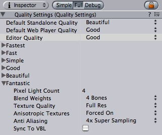

Previous
Previous

The Quality Settings
You can tune Quality Settings by choosing Edit -> Project Settings -> Quality.
Properties
| Property: | Function: |
|---|---|
| Default quality setting used for standalone players. | |
| Default quality setting used for web players. | |
| The current quality setting used in the editor for previewing. | |
| The quality setting details for different global quality settings | |
| The maximum number of pixel light counts used. If there are more lights affecting an object, the light will automatically be represented as a vertex light. | |
| How many blend weights should Unity use on a skinned mesh. 2 Bones is usually a very good tradeoff between speed and quality. | |
| Should Unity decrease the resolution of all textures. | |
| Anisotropic filtering increases texture quality when viewing the texture at a steep angle, but incurs a performance cost. You can modify Anisotropic filter level per texture, see Texture2D. | |
| Should anti-aliasing be used. This removes blocky edges but incurs a performance cost. | |
| Synchronize to screen refresh rate. This will slow down the game but avoid any tearing artifacts. |
You can adjust each of the 6 quality settings individually to fit your game. The end-user can then choose the Quality Setting in the Screen Selector of the standalone player; or you can access and modify it from scripting.
The Quality Settings are by default initialized to some good values that work across a wide range of games.
Note that Anti Aliasing and Sync To VBL currently do not live update when inside of the editor. You have to restart the editor or player to see the effect. This will be addressed in the future.